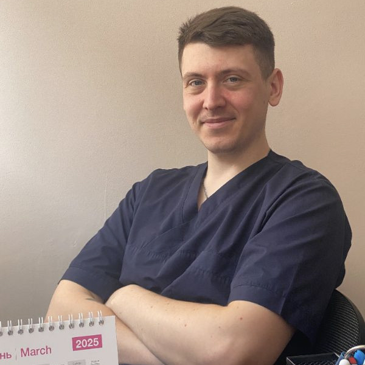
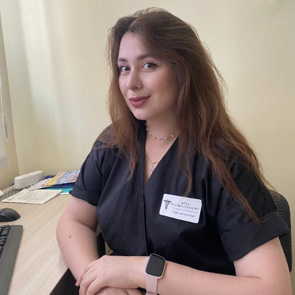
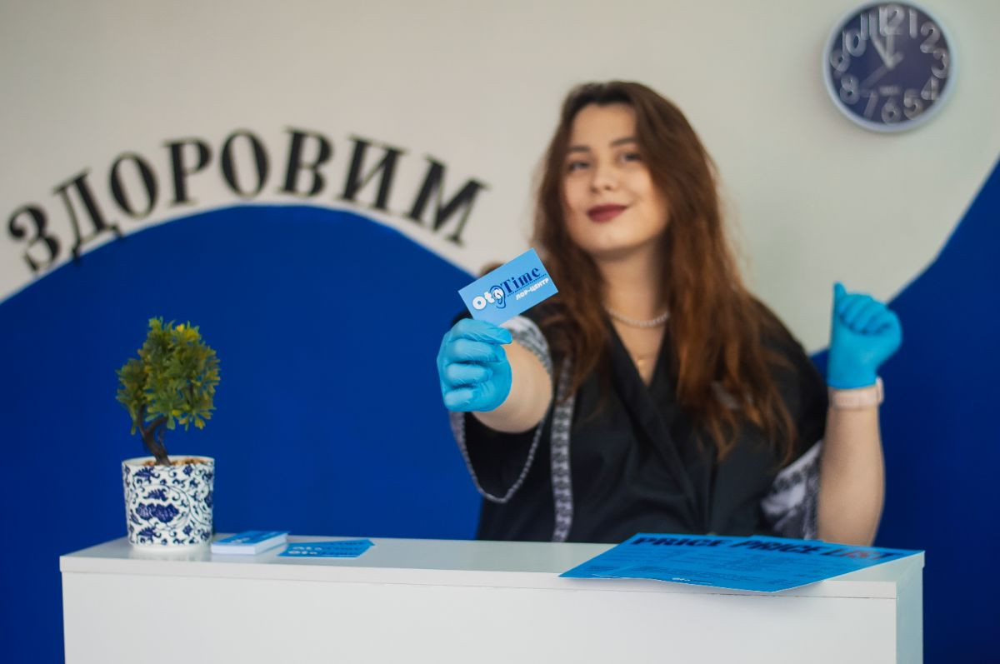

Ваше здоров'я в надійних руках
Наші лікарі керуються принципами доказової медицини. Жодних зайвих призначень та турбота про кожного пацієнта.




Ендоскопія, аудіометрія, якісна терапія та експертна алергологія у Прилуках. Точний діагноз без стресу для дорослих та дітей.

Тривалий нежить, закладеність носа, залежність від крапель або біль у горлі.
Сезонна алергія, висипання, свербіж очей, хронічний кашель без застуди.
ГРВІ, підвищений тиск, хронічна втома, потреба в професійній консультації терапевта.
Наші лікарі керуються принципами доказової медицини. Жодних зайвих призначень та турбота про кожного пацієнта.


Оберіть категорію, щоб дізнатися вартість
Заплануйте свій візит заздалегідь, щоб уникнути будь-яких черг.
Виберіть зручний напрямок, потрібного лікаря та час у нашій системі.
Перейти до запису